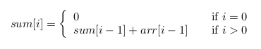
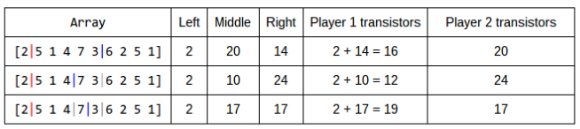

Code Jam 2014 - Round 3
Analysis: Magical, Marvelous Tour
There is an array of devices, each containing a known number of transistors, and among these there is 1 golden transistor both players want. Player 1 (Arnar) specifies a section of the array (this will divide the array into 3 sections [0,i), [i,j], (j,N-1]), then player 2 (Solveig) will pick one of the sections to take, leaving the other two for player 1. The problem asks us to find Arnar's chances of getting the special transistor given that both players act optimally and that every transistor has the same probability of being the golden one.
First, we recognize that we can compute the summation of any section of the array in O(1) time after precomputing a sum array. A sum array can be constructed using the following recurrence from 0 to N:

Then, for any partition of the device array, we can efficiently find the number of transistors inside each section using:

In order to determine the best boundaries that Arnar can put on the array, we can iterate through all the possible boundaries and store the best one. In code, this translates to using 2 for loops that cover all combinations of i and j with i <= j. For each, we can obtain the number of transistors in each resulting section (using the sum array as discussed above). Then, since Solveig will always take the section with the most transistors, Arnar’s score for a particular choice of boundaries is the minimum of any combination of 2 sections (right + left, middle + left, middle + right).
This solution runs in O(N^2) because we consider all combinations of i and j. This is good enough to pass the small input; however, it will timeout when running the large input. To pass the large input, we should come up with an O(N log N) algorithm. We need a couple more key observations for the O(N log N) algorithm:
First, notice that we can reformulate this problem as finding which 3-way partitioning minimizes the largest value of any partition, since Solveig will definitely choose the section with the most transistors after Arnar has decided on the 3-way partition.
Second, as a follow-up to the observation above, it only makes sense for Arnar to choose boundaries in which the values of the 3 sections are as close as possible with each other (otherwise Solveig will gain the upper hand by choosing the section that has significantly more transistors than the other 2, leaving less for Arnar).
The last insight that will allow us to come up with an O(N log N) algorithm is that the cumulative sum array is by nature sorted therefore it is monotonically increasing, which hints at the idea that we can utilize binary search. The algorithm idea is to iterate through the possible values for i (left boundary), and then to binary search for the optimal j (right boundary) given that left boundary. Specifically, we want the value of j that minimizes the difference between the transistor counts in the [i,j] section and the (j,N-1] section. We now describe the binary search process. We will start with 2 pointers (the possible range that our right boundary could be). The pivot will be in the middle of the 2 pointers (this is our guess at where the right boundary will be). If the right side of the pivot is greater than the left side of the pivot then we know our right boundary will be somewhere on the right and vice versa, so we can cut our possible range by half (and do so repeatedly until there is only one possibility).
Let’s go through an example for clarification. This example is taken from sample input 2 :
INPUT: 10 17 1 7 1 generates [2 5 1 4 7 3 6 2 5 1]Now let’s say our left pointer is between index 0 and 1 and we are trying to find the best right boundary using binary search. Our first guess should be for the right boundary to be between the left boundary and the end of the array (which puts it between values 3 and 6). The table below will illustrate the progression of our binary search. The first column contains a visualization of our array and the boundaries we are checking. The next 3 columns contain the values of each partition that is made by the boundaries. The last 2 columns tells us how many transistors each player will receive with the given partition. Each row is an iteration of our binary search.

Notice that the right partition is always moving in such a way to maximize the value of the partition (middle and right) that is lacking (i.e. in the second row in the figure above we moved to the left because the middle partition value is greater than the right partition value in the first row).
Since we have a way to find the optimal partitioning with a given left boundary, our answer is then the best answer out of those after we iterate through all possible left boundaries. Binary search takes O(log N) and we do that for N left boundaries which gives us a total of O(N log N) runtime.
This solution is good enough to pass all of our tests; however, it is possible to do even better. For example, we can try to find a tight lower bound on Solveig's score by answering questions of the form: "Can Arnar produce a 3-way partitioning that limits Solveig to a score of at most Z?". Clearly there is some value K such that the answer to this question is "no" for Z < K and "yes" for Z >= K, which means that K can be found by binary search.
In order to answer such a question, we note that given Z, Arnar can't do better than to choose the left and middle sections greedily: he selects i as large as possible while putting no more than Z transistors in the left section, and then j as large as possible while putting no more than Z transistors in the middle section. Then, if the resulting right section also contains no more than Z transistors, the answer to the question is "yes", otherwise "no". Finally, we see that these values for i and j can be found efficiently by using binary search in the sum array, so we can answer our question for a specific Z in O(log N) time.
This strategy takes O((log N)^2) for the outer binary search (we ask O(log N) questions that each take O(log N) time to answer), but of course it also requires use of the sum array which takes O(N) time to compute. Therefore, the overall complexity is O(N). Perhaps surprisingly, it is even possible to solve this problem in O((log r)(log N)^2)! See if you can figure out how to use some complicated math to avoid computing all O(N) elements of the sum array (hint: you need to exploit the particular formula given for the number of transistors in each device).